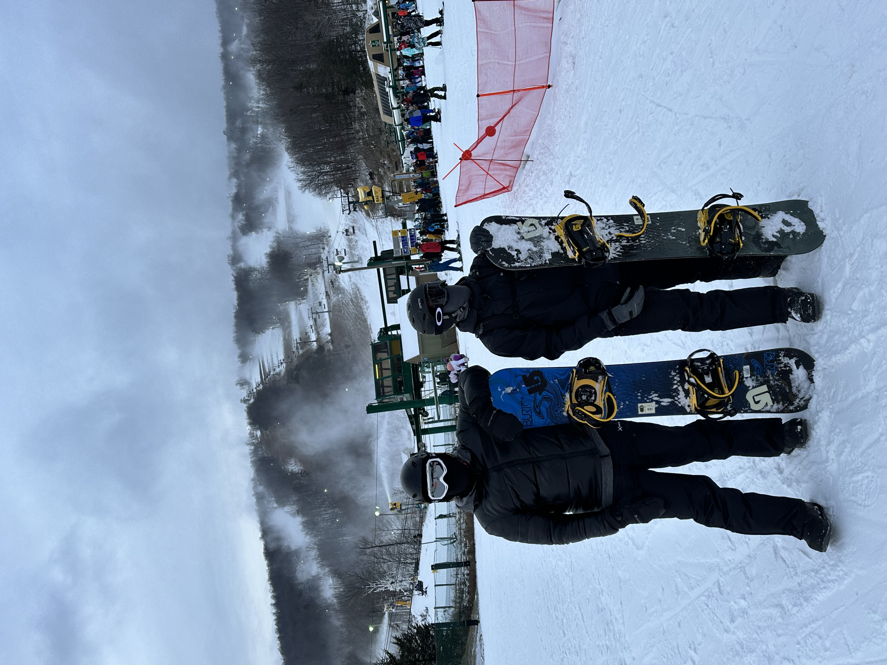

Outside of the classroom, I have many different hobbies and interests. Some of my favorite things to do include traveling, film photography, and snowboarding.
One of my biggest passions is traveling and learning more about the world I live in. My most recent trip was last year when I spent a week in Greece with my brother.

Another one of my passions is film photography. The two cameras that I have are an Olympus OM10 and a Cannon Sure Shot 85 zoom. I usually bring one of my cameras everywhere I go and enjoy the creative process of capturing an image. The image below is one of my favorites that I've taken.

During the winter, my favorite thing to do is go snowbaording. I usally go almost every other week.
